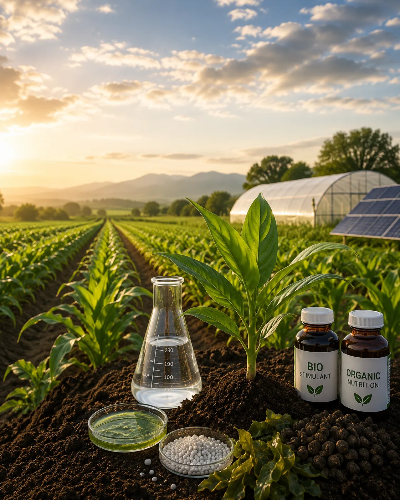

Specialty Fertilizers
Advanced nutrient sources designed to support efficient, targeted, and modern crop nutrition programs.
Explore Specialty FertilizersAdvanced Crop Nutrition
Modern agriculture increasingly requires more precise, efficient, and responsible approaches to crop nutrition. AR Traders is developing partnerships and capabilities across specialty fertilizers, organic and bio-based inputs, and customized crop nutrition solutions for Pakistan's evolving agricultural market.

The Next Stage of Crop Nutrition
Conventional fertilizers remain essential to agricultural productivity, but modern crop production increasingly benefits from solutions designed around nutrient efficiency, soil health, crop requirements, and changing market expectations.
AR Traders is expanding its long-term crop nutrition strategy beyond traditional fertilizer categories through dependable sourcing, international partnerships, and responsible market development.
Our approach is focused on introducing credible solutions that complement established nutrient programs while supporting the future needs of farmers, dealers, and agricultural businesses in Pakistan.
The future of crop nutrition is more precise, more efficient, and more responsive to local agricultural needs.
Advanced nutrient sources designed to support efficient, targeted, and modern crop nutrition programs.
Explore Specialty FertilizersDeveloping solutions that support soil health, biological activity, nutrient-use efficiency, and more sustainable farming systems.
Explore Organic & Bio-Based InputsCommercially focused nutrition programs developed around crops, markets, supply requirements, and business objectives.
Explore Customized SolutionsSpecialty Fertilizers
Specialty fertilizers are designed to support more precise nutrient management across different crops, production systems, and application requirements.
This category may include advanced fertilizer sources, enhanced nutrient combinations, water-soluble products, controlled or improved-efficiency nutrition, and other specialized solutions sourced through credible supply partnerships.
AR Traders is developing this area carefully, with emphasis on product reliability, market relevance, responsible positioning, and dependable commercial supply.
Our specialty portfolio will grow through verified partnerships and products suited to Pakistan's agricultural and commercial requirements.
Organic & Bio-Based Inputs
Pakistan's soils require more than conventional NPK nutrition alone. Organic matter, soil condition, biological activity, and nutrient-use efficiency are increasingly important considerations in productive farming systems.
AR Traders is actively developing its organic and bio-based portfolio through international partnerships and responsible product evaluation.
Potential categories include organic fertilizers, compost-based inputs, biostimulants, microbial solutions, soil conditioners, and other products that complement established fertilizer programs.
AR Traders participates in international trade platforms, including Ecomondo in Rimini, Italy, to identify proven technologies, credible producers, and long-term supply partners for this growing segment.
Customized Crop Nutrition
Different crops, regions, customers, and supply programs may require different approaches to nutrient sourcing and portfolio development.
AR Traders works with manufacturers, suppliers, dealers, and agricultural businesses to explore commercially suitable crop nutrition solutions aligned with defined market requirements.
Customized opportunities may include selected nutrient combinations, packaging requirements, supply programs, portfolio development, and market-specific product positioning, subject to technical, regulatory, manufacturing, and commercial feasibility.
Customized solutions are evaluated case by case and remain subject to technical suitability, regulatory requirements, manufacturing capability, and commercial viability.
Practical knowledge of Punjab's fertilizer markets, dealer requirements, seasonal demand, and commercial realities.
Partnership development with credible local and international manufacturers and suppliers.
New categories introduced carefully, with clear positioning and realistic commercial claims.
Established market reach and dealer relationships supporting efficient product movement.
Ability to evaluate new products, supply programs, packaging requirements, and partnership opportunities.
A structured approach to building advanced crop nutrition capabilities for Pakistan's evolving agricultural sector.
Looking Ahead
AR Traders will continue developing advanced crop nutrition capabilities through international sourcing, manufacturer relationships, responsible product evaluation, and practical market development.
The objective is not simply to add more products, but to build a dependable portfolio of solutions that respond to real agricultural and commercial needs.
Supporting healthy vegetative growth, crop development, and productive farming systems.
Explore SolutionsSupporting root development, early crop establishment, flowering, and efficient energy transfer.
Explore SolutionsSupporting crop quality, plant strength, water regulation, and resilience in demanding conditions.
Explore SolutionsEssential calcium, magnesium, and sulphur nutrition for balanced plant growth and crop quality.
Explore SolutionsAddressing essential micronutrient requirements that support development, flowering, and performance.
Explore SolutionsOur team is ready to help you identify the right crop nutrition solutions for your business requirements.